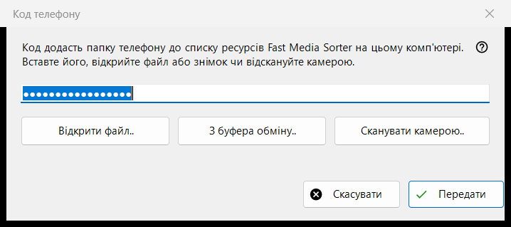
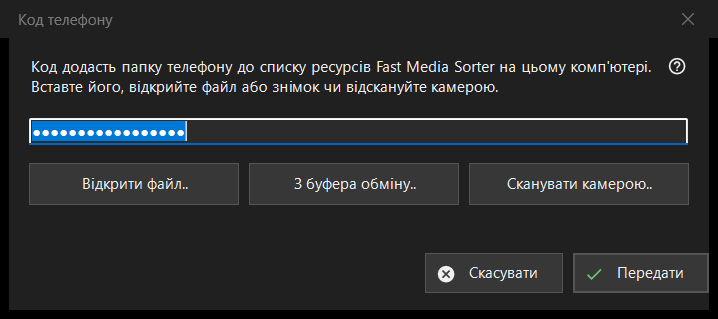

Код телефону
Призначення
Приймає код підключення, створений застосунком на телефоні, і передає його в Fast Media Sorter, який додає папку телефону до списку ресурсів на цьому комп'ютері. Вікно відкривається кнопкою «Код телефона..» у головному вікні Share Manager.


Порядок дій
- Отримайте код одним із чотирьох способів: введіть або вставте його в поле, натисніть «Відкрити файл..», натисніть «З буфера обміну..» або «Сканувати камерою..».
- Натисніть «Передати».
- Підтвердьте додавання папки у вікні Fast Media Sorter, що з'явиться.
Елементи вікна
Код підключення
Однорядкове поле, де замість символів видно крапки, бо код - секрет; у журнал він не записується. Якщо натиснути «Передати» за порожнього поля, вікно попросить ввести код, вставити його або відкрити файл чи знімок.
Файл, буфер і камера
«Відкрити файл..» читає файли .fmscfg, .json і .txt та зображення з QR-кодом (.png, .jpg, .jpeg, .bmp, .webp); файл можна також перетягнути у вікно. «З буфера обміну..» читає код із буфера обміну. «Сканувати камерою..» відкриває вікно камери, а відсканований текст обробляється так, ніби його вставили.
Передати
Код перевіряється й надсилається запущеному Fast Media Sorter, чий власний діалог імпорту, як і раніше, ставить свої звичайні запитання. У разі успіху рядок стану повідомляє «Код передано: підтвердьте додавання у вікні Fast Media Sorter.», і вікно закривається. Якщо Fast Media Sorter не знайдено, він старої версії або не відповідає, код поміщається в буфер обміну з позначками конфіденційності, а рядок стану радить вставити його через «Імпорт із буфера» в панелі ресурсів.
Повідомлення в рядку стану
Документ, який не читається як код підключення чи файл налаштувань ресурсу, оголошується нечитабельним. Файл, створений новішою версією, просить оновити Fast Media Sorter. Якщо буфер обміну зайнятий іншою програмою, рядок стану повідомляє про це.
Налаштування менеджера · Налаштування спільного доступу SFTP · Налаштування сервера обміну